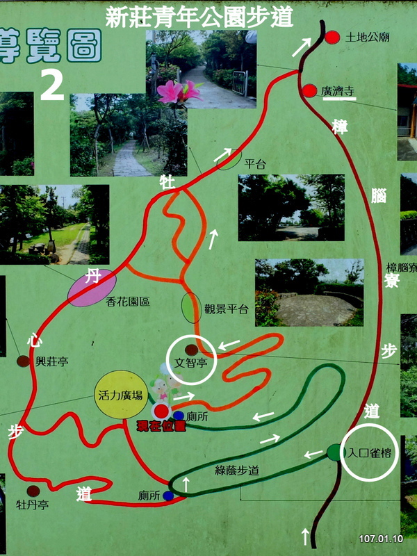
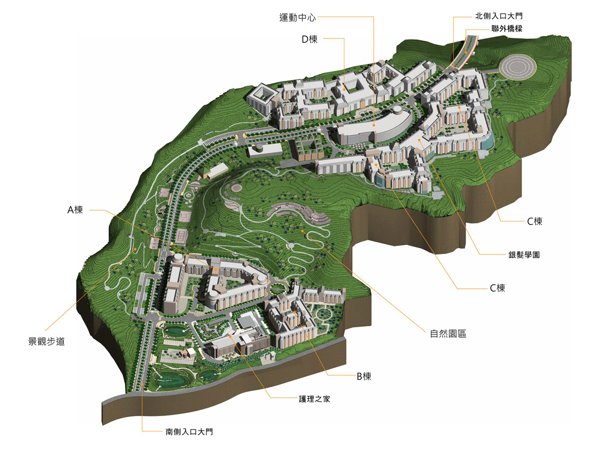
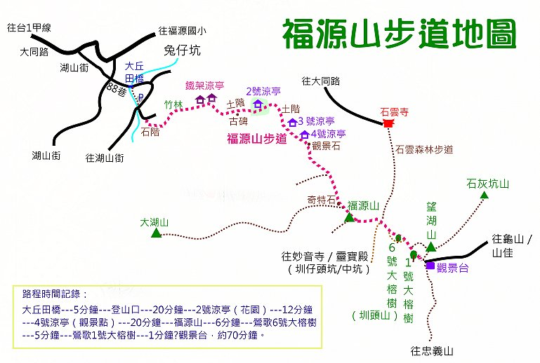

公園步道
新莊 牡丹心步道 / 青年公園步道
步道簡介：
牡丹心生態公園，又稱「新莊青年公園」，座落於啞口坑溪及十八份坑溪之間，的牡丹心山系，是新莊地區唯一的自然生態保育公園。
園區內的步道系統四通八達，大致可分為左、中、右三條主要路線，分別為牡丹心步道、林蔭步道及樟腦寮步道，
位於外環的牡丹心步道及樟腦寮步道在山頂的牡丹心福德宮附近交會，是主要的登山步道。
位於中線的林蔭步道，鋪鋪柏油路面，道路兩側樹木夾道，宛如綠色隧道，綠蔭怡人。步道採迂迴盤繞上山，
坡度平緩，路況最佳，連娃娃車及輪椅都可以上路，是老少咸宜的大眾化路線。林蔭步道終點的活力廣場，
設有運動及兒童遊戲設施，是牡丹心生態公園最主要的遊憩景點。活力廣場附近有多條步道支線可通往牡丹心步道， 續爬往山頂的觀景平台及瞭望台，然後再通往牡丹心福德宮。
樟腦寮古道
由瞭望台續行，變為寬闊的水泥路小車道，前行約七、八分鐘，與一條柏油路交會。T字型岔路口， 右下往廣濟寺，左上往牡丹心福德宮。我先前往牡丹心福德宮。
走一小段上坡路，就抵達牡丹心福德宮。這座土地公廟位於分水嶺，後續的馬路轉為下坡路，這裡也是新莊與桃園龜山鄉的分界處。
這條柏油路曾是昔日新莊通往林口台地的古道，如今僅在牡丹心生態公園內仍保留了一小段步道，被命名為「樟腦寮步道」。
自行開車：
- 開車由文化一路,進入文青路, 須將車停在合宜住宅區，再步行到水資源回收中心後延右側小路進入步道區。
- 在A7 重劃區住戶可以直接步行前往。
- 合宜住宅區 文青路與文學路交口有收費停車場，每小時20元, 12小時80元。其他路邊多為紅線區，但仍有許多停車。
公共運輸：
- 可搭乘 967或 202公車到合宜住宅後 步行進入 步道區。
相關介紹：
攝影集：
導覽圖

龜山 長庚養生村
步道簡介：
養生村的步道分為
- 和緩步道 / 低氧步道: 鋪面以高壓水泥磚為主，利用此步道串聯各棟及全區使步道成為環狀系統，坡度控制在12.5 % 以下，可供年長者使用。動力中心至山頂工作平台間路段，則可供高爾夫球車使用以為緊急事件處理
- 休閒步道 / 中氧級步道: 鋪面為刷石子，此步道所需運動量略大於和緩步道，坡度在 25 % 以下。在環山步道系統下增設另一條步道，增加動線上的趣味性與挑戰性。
- 休閒步道 / 高氧級步道: 鋪面為頂鑄石板步道，提供活動力較強且體能狀況良好者使用，其間坡度變化大，利用階梯達到高氧的活動。
- 休閒步道 / 中至高氧級道: 林棧道以斜坡及階梯穿插，提供喜愛走樓梯者使用，其間搭配木平台，除休憩外還可親近自然環境。
自行開車：
- 開車前往約6公理，約需13分鐘 (由樂善國小生活圈起算）
- 經由文化一路或華亞三路轉振興路，再進入長青路
- 園區內有停車區, 並可申請參觀養生村設施
公共運輸：
- 可由林口長庚醫院 或 長庚科技大學 搭乘長庚醫院免費接駁車前往
相關介紹：
攝影集：
導覽圖

龜山 福源山步道
步道簡介：
福源山步道:位於桃園龜山區福源村,步道全長約2.2公里,由海拔104公尺至345公尺,係由龜山 區福源村長顏福來 徵得地主同意,號召村民重現當地古步道,歷時三年打造完成,步道沿途栽種杜鵑、鳳仙、波斯菊、太陽花等十餘種花 卉,也種植油桐、山櫻花等樹木供遊客觀賞,並於展望良好處設置涼亭,步道終點為鶯歌著名的「千年大榕樹」,並設有 觀景平台,可遠眺大台北盆地、三峽、桃園等地區,相當適合民眾來此登高健行。
自行開車：
- 開車前往約11公理，約需22分鐘
- 經由振興路至與縱貫路/萬壽路交口左轉, 再經由茶專路，兔坑路，大同路。在大同路570巷進入轉湖山街88巷進入福源山步道停車場。
- 進入大同路570巷後，經湖山街88巷都是單向通行窄巷需注意禮讓對面來車。
- 在福源步道入口有汽車與機車停車區, 及充裕的回車空間。
公共運輸：
- 由林口長庚醫院 A8 搭乘5063公車經 29 個停車站，約 49 分鐘 到達 大同路口下車。
- 再步行 2 公里, 約 26 分鐘到達福源山步道入口. 距公車佔較遠，不建議搭乘公車。
相關介紹：
攝影集：
導覽圖

蘆竹 羊稠森林步道
步道簡介
跟著昔日牧羊人的步伐，踩踏南崁溪支流的坑谷地，林間羊稠(閩南語的羊圈)、放牧景象已不復見，倒是不少登山客的身影穿梭在這寂靜的山野步道。羊稠坑森林步道總長約3.3公里，大致上屬平緩好走，沿途綠意盎然，還能遠眺高鐵穿越隧道，走一趟，絕對值得！
沿著張榮發基金會文物館、長流美術館旁的羊稠巷上行約100公尺，即見有可愛山羊石雕的登山口，寬敞的土石路徑走起來不費力，步行約100公尺後，來到此步道的第一個關卡－好漢坡，215階梯挑戰你的心肺功能，卡路里急速消耗！若是不想一開始就消耗太多體力，可取右邊岔路，兩路線皆是通向七分山，七分山頭的健康廣場設有鞦韆、簡易健身設施，可在此稍作休息。接著在徐徐山風吹拂下，續行200公尺平坦土階邁向八分山。若規劃「輕量級｣登山，右方往吳氏祠堂的叉路可折回中山路。
續向尖山行，高壓電塔聳立的地方即是山頭，往九分山途中，右方叉路可前往座落大榕樹下的「百年龍頭觀音土地廟」，左方可通向仁愛路三段560巷登山口。過九分山沿著石階登上觀景台，只見高鐵快速穿越隧道、桃園國際機場飛機起降、更遠處還有船隻行駛在台灣海峽上，陸海空景大集合，令人眼界大開！步道制高點-海拔225公尺的羊稠山頂，是最熱門的高鐵觀賞處。一路下坡，行經甲蟲生態區涼亭、長型涼亭後，便是步道終點-六福路登山口。羊稠坑森林步道擁有豐富的生態景觀；鳳尾蝶、松鼠、鍬形蟲穿梭在筆筒樹、油桐與相思樹間，讓這鄰近都市的綠地，展現多采多姿的自然樣貌。
自行開車
- 由林口八德路，高速公路旁的八德一路進入, 接者左轉進入仁愛路三段。在仁愛路三段260巷左轉 再左轉進入羊稠街
- 六福一路-羊稠步道入口：在六福一路上可停少數路邊停車。所以建議開車或搭公車都由中山路入口進入。
- 中山路-羊稠巷入口：南崁國小附近(中山路)，周邊有路邊停車格。
公共運輸
- 由長庚醫院搭乘 708 公車經 11個站, 在 中山長春路口 （中山仁愛）下車，再步行 5 分鐘, 350公尺到達 羊稠坑步道。
相關介紹
攝影集
導覽圖
龜山 楓樹坑步道 / 龜崙山
步道簡介
楓樹坑登山步道是桃園虎頭山眾多登山步道之一，登山入口就位於楓樹村光峰路 281巷的巷底，由此進入後，會先經過楓樹國小的側門，再由福德宮旁的車道續往上行，即可抵達主祀玄天上帝的真武殿，殿內環境清幽，也是一處參訪的好地點，廟旁有條筆直的枕木階梯就是楓樹坑登山步道的起點。
自行開車
- 由華亞三鹿，經振興路。與縱貫路交會時, 右轉長壽路/台1線。遇光峰路右轉 於光峰路 281 巷進入就達豋山口．
- 停車位：在光峰路上有少數路邊停車位。平日有空位機會
公共運輸
- 由長庚醫院站 搭乘 5063 / 5116 公車經 21 個站 約 39 分鐘到楓樹社區（楓樹國小）下車。 再由光峰路 281 巷進入，步行 4 分鐘即可達。
相關介紹

導覽圖
林口 新林步道 / 老公崎步道
步道簡介
「新林步道位於新北市林口台地東南邊與泰山區交界之山麓沿線，從新寮路33號電線杆右轉進入，沿路有登山口牌樓、草茵步道、地毯步道、賞車亭（觀景台）、 情人橋、好漢坡、木棧步道、賞桐步道、風鼓步道、七 里香步道、獨立樹等景觀。沿路還有三十幾種植物的介紹牌，有 些是原生植物，以及十多種動物的介紹標示說明。
老公崎步道位於林口區仁愛路1段211巷底，鄰近仁愛公園及新寮休閒步道。步道入口為高架木棧步道，由木棧道一步步向下前行即可到達老公崎土地公廟。土地公廟為步道中心，往右可達福神橋、板根神木棧橋、善友橋、溪心壩、善友亭；土地公廟左轉則有松坡嶺、蒲團松、松柏崗、新林宮，步道全長約3公里，環境清幽，坡度不大，適合登山健行新手入門。
自行開車
- 由文化一路至仁愛路二段右轉，經仁愛路一段在與粉寮路一段交叉口，右轉進入仁愛公園停車。
- 停車：
- 仁愛公園有收費停車場。週1-5 08:00-18:00 每小時20元
- 仁愛路一段 211巷 - 123 巷 都能免費停車
- 林口停六，停七 兩停車場也都很近
公共運輸
- 在桃園酒廠，搭公車 858 到醒吾大學，步行 9 分鐘(650 公尺）可達老公崎步道
- 搭 858 如在國立師大站下，可直接到 新林步道。
相關介紹
攝影集
導覽圖
林口 森林步道
步道簡介
林口森林步道，遠離塵囂，人煙雜沓的地方，位於新北市林口區頂福里頂福巖顯應祖師廟左後方的山邊，林口頂福巖顯應祖師廟主要祀奉顯應祖師，於民國83年9月27日入廟安座，是早年泉州安溪人的信仰。步道入口設有導覽地圖，地圖後方為愛心杖及愛心傘放置區域供登山遊客使用。
林口森林步道為溪流山澗切割分散的丘陵谷地，海拔約200~250公尺的丘陵地，全程有4,270公尺。步道之完成，得力於林口登山健行協會用心開闢整理出來的一條原始森林步道，協會義工所用近自然工法，使步道儘量融入自然環境與地景之中，除必要之休憩及安全設施外，少用過多的人工構造物，且步道保持自然土路路面，沿途尚可見多種中低海拔次森林之樹種，讓人體驗走在這蒼翠綠意盎然的原始森林裡。
自行開車
- 由文化北路--遇中山路左轉產業道路--前行2公里到達林口頂福巖顯應祖師廟左後方，即可見到林口頂福巖森林步道入口。經產業道路至目的地都是雙向道路。
- 停車：在頂福巖顯應祖師廟周圍都有停車位
公共運輸
沒有便捷的公共交通到達此處，建議開車前往。相關介紹
健行筆記, Youtube 2021/07/25 連林口人也不一定來過的地方！上集攝影集
導覽圖
林口 太平濱海步道
步道簡介
太平濱海步道，位於林口區太平里，以林口台地西北邊與八里區交界之山麓沿線，涵蓋太平嶺地區及濱海南灣頭，過去是由「保甲路」改建，村民會帶著魚、蚵、竹筍等農產漁獲，通往新莊、林口從事買賣生意。民國94年，八里焚化廠與太平村居民、林口鄉公所利用焚化廠回饋金進行推動全國首創的社區總體營造，於民國97年正式啟用太平濱海步道。全長約2.53公里，整條步道所鋪設石階約8千階，沿途保留原有植栽及自然生態，路上更設有植物解說牌，讓遊客能夠認識在地原生植物，由觀海平台向下俯視，可鳥瞰西濱海線及山邊不同景點，是一條最佳親子互動及尋幽探險的好去處。
想要到太平濱海步道的人，進出口處有北79線道3公里處、八里垃圾焚化廠旁步道口、台15線步道口、黃家古厝步道口、普濟寺旁叉路進入的步道口（南灣頭），通常較多人選擇途逕，一是從海邊的南灣頭（約位於台15線西濱公路13.7K處）往上走，一般稱「先苦後甘」；另一種方式則為「先甘後苦」是從山上的太平嶺（約位於北79區道3K處）往下走，上太平嶺鞍部制高點時，就能將迷人的台灣海峽，八里焚化廠、台北港、八里市區、淡水河、山邊的觀音山的景緻盡收眼簾；太平嶺濱海步道由上而下或是由下而上，因選擇感受不同，故兩者皆各有所好，歡迎大家一齊來體驗，另類不同風格的低碳旅遊。
自行開車
- 從文化一路直行至底，左轉接105市道(往八里方向)，再左轉北79區道，至指標牌3K之前，於右側小路往下走，即可看見太平濱海步道(懷舊古道)入口。沿北79線過阿榮片廠後約5-10分鐘可見入口。
- 從台15線西濱公路13.7Ｋ處，可至太平濱海步道入口。
公共運輸
林口長庚醫院轉林口區新巴士F235號至南灣頭站, 但班次很少建議自行開車前往。相關介紹
健行筆記攝影集
導覽圖
林口 大峽谷/八里 水牛坑
步道簡介
據報導，這裡原本只是一處小山丘，因人為非法開採砂石，造成部分山丘被挖掉大半而形成這狀似「美國大峽谷」的地貌，因此後來被人稱做「林口大峽谷」，而水牛坑的由來，是因為起初當地人家在此放養水牛，後來越繁殖越多，水牛成群，最多時期可以看到2-300頭水牛成群吃草的壯觀景象，因而才有「水牛坑」之稱!
這裡的
山丘為粗粒沙岩、頁岩、泥岩所組成的大南灣層，可說是大台北地區研究地質最好的天然教室，來此體驗一片荒漠景象，不由得讓人憶起美國西部牛仔~那荒野大鏢客的電影情節場景
自行開車
- 林口台15線西部濱公路18.3K公路旁。
- 停車：當地可以找到停車位
公共運輸
搭乘F236(新北市林口免費公)至”林投站“下車走2~3分鐘。相關介紹
健行筆記攝影集
導覽圖
五股 水碓觀景公園
公園簡介
水碓觀景公園於民國88年正式啟用，公園位於水碓路底，憲兵學校後方的水碓觀景公園，佔地10.50公頃的園地採斜坡式設計，配合坡度遍植花木，內有健康步道、自行車道、慢跑道，6條長短不等的休閒步道及7座觀景涼亭，分別命名為凌霄、御風、覽勝等，提供民眾多樣化健康休閒設施，另有2條車道及1個可放12輛汽車與10部機車的停車場。引起周邊地區遊憩風潮，清晨的運動、午後的野餐、傍晚的夕陽、夜晚的萬家燈火、水碓觀景公園陪伴了許多人們的生活，近年來更加強其公園內的環境美化，栽植美麗的花兒及整齊劃一的灌木群。爬上公園最高點可觀賞、眺望大台北盆地景色，景色盡收眼底，還可以觀賞飛機降落的景象；夜間來此，景致更迷人。高速公路上南北往來的旅客可輕易地眺望公園精神字標「五股」、「WUGU」的造型字梯，晚上燈光透射，頗具特色，更感受到五股的親切與活力。
自行開車
- 開車 走明志路三段 / 107縣道 11.6 公理，需33分鐘。
- 經過文桃路往新莊區，於新北大道七段/台1線 左轉。一小段後與明志路三段左轉進入 107 縣道
- 過與國道1號地下穿越道後，左轉登林路
- 停車：
- 在步道入口處，有停車區 但路非常窄。不建議進入
- 登林路上有收費停車場
公共運輸
- 搭機場捷運至A5 泰山站，轉乘 813 / 805 公車至明日世界站，再步行 1.1 公里 約 18 分鐘到達公園
- 搭機場捷運至A6 貴和站，轉乘 637 公車至憲兵學校站，再步行 1.10 公里 約 16 分鐘到達公園
相關介紹

導覽圖
蘆竹 五酒桶山/山鼻山 步道
步道簡介:
五酒桶山步道全程約4公里，由五條路線串聯，海拔高度落差約80公尺. . . .關於五酒桶山名由來，有一說是明鄭時期，遷居於此的蔡光省先生與其五子，極愛飲酒且酒量極好，一次豪飲一桶酒，當地因此稱作五酒桶山。另一說法則是村民都牽牛隻都來此飲水，而有「牛水桶山」之名，日後取諧音轉為五酒桶山。
自行開車:
- 開車 11.6 公理，需27分鐘。
- 經過文化一後，左轉八德路。再進入八德一路桃2縣道，經六福路在六福路252巷右轉上桃園南天宮。 或在長興路一段才右轉, 由六福路252巷的另一段反方向到桃園南天宮。
- 停車：
- 在步道入口處，桃園南天宮有免費停車區
- 長興一路路邊停車位
公共運輸:
- 由林口長庚醫院搭 708 經9個站,1小時5分鐘 到 六福中山路口 （鵬程萬里社區）下 步行 25 分鐘, 1.6 公里到達五酒桶風經區.
相關介紹:
攝影集
導覽圖
桃園 虎頭山公園
步道簡介
虎頭山公園座落於桃園市郊成功路三段臨南崁溪處，每天都有許多居民來公園運動晨操，假日的人潮更是暴增，連來自龜山、八德、中壢、桃園、蘆竹之民眾都愛到此健行休閒。目前已從現有的15公頃公園擴大為720公頃的風景特定區，區內規劃虎頭山、楓樹坑二大遊憩系統、三大登山系統，將虎頭山打造成北台灣重要的都會公園。三大登山系統包含虎頭山公園內的前山步道系統(含全齡友善步道、環狀步道)、與虎頭山公園外的後山環山步道和桃11線道路系統。
虎頭山公園鄰近桃園市區，地勢居高臨下，為城市景觀保留了豐沛綠意，而享有「桃園後花園」的美譽。公園內規劃有多條步道系統，以顏色作為路線區分，除了園區的人行步道外，另外完整規劃出包括賞景健康步道、櫻花步道、森林體驗步道、太陽亭步道、梅園步道、生態解說步道、忠烈祠步道等七條環狀登山步道，讓遊客更容易探訪虎頭山的美景全貌。此外，前山系統另包含以架高工法打造的全齡友善步道，不僅保護動植物的原有生長環境，也提供爬山者較為舒適的健行體驗。
全長共20公里的後山環山步道，由桃園區成功路沿途行經桃11線道路、龜山區苗圃道路、中坑街、光峰路，再由台一線串回原點。而促進桃林鐵路活化的桃11線道路系統，包含以無障礙坡道串連虎頭山公園與忠烈祠的虎嶺迎風步道、以及可連接虎頭山環保公園的三元步道、水汴頭步道。
自行開車
- 走振興路，在縱貫線右轉接台1線/長壽路。遇成功橋 / 成功路三段右轉,在三聖路就能看見入園標示
-
停車:
- 在入公園路上有多處停車場．且有需多優惠
- 在榮總桃園分院也可停車, 再步行入園
公共運輸
- 在林口長庚醫院站，搭乘 5063 公車，經過 32 站 約56分鐘在拔仔埔下車。步行1.5公里 約25分鐘到達．
相關介紹
攝影集
龜山 苗圃綠環境生態園區
園區簡介
龜山苗圃綠環境生態園區 鄰近虎頭山風景特定區及大坪頂地區，面積約13公頃，設置休憩木平台、苗圃管理室、鐵馬休憩亭、景觀花園、活動教育教室等設施。不僅是桃園公共建設樹木移植的暫置場所，也培育樹苗，每年免費提供苗木供領取種植，提高桃園綠美化的指標。
- 地址： 33379桃園市龜山區下湖街320號
- 營業時間： 09:00 - 17:00, 週六日：10:00 - 16:00, 週一：休息
自行開車
- 桃11鄉道：經文化7陸，頂湖二街, 樹人路, ６.4 公里 約14分鐘到達
- 桃7鄉道：由復興一路，左轉105縣道。再右轉下湖街, 下湖街161巷
- 園區備有停車場。進入下湖街，部分路段狹窄僅容單向通行。但基本上可以開車前往。
公共運輸
- 在長庚醫院站搭乘 5063, 經 13個站點約20分鐘到達 下湖站下車
- 再步行 1.2公理，約14分鐘到達
相關介紹
Facebook: 龜山苗圃綠環境生態園區
攝影集
導覽圖
龜山 苗圃綠環境生態園區
園區簡介
龜山苗圃綠環境生態園區 鄰近虎頭山風景特定區及大坪頂地區，面積約13公頃，設置休憩木平台、苗圃管理室、鐵馬休憩亭、景觀花園、活動教育教室等設施。不僅是桃園公共建設樹木移植的暫置場所，也培育樹苗，每年免費提供苗木供領取種植，提高桃園綠美化的指標。
- 地址： 33379桃園市龜山區下湖街320號
- 營業時間： 09:00 - 17:00, 週六日：10:00 - 16:00, 週一：休息
自行開車
- 桃11鄉道：經文化7陸，頂湖二街, 樹人路, ６.4 公里 約14分鐘到達
- 桃7鄉道：由復興一路，左轉105縣道。再右轉下湖街, 下湖街161巷
- 園區備有停車場。進入下湖街，部分路段狹窄僅容單向通行。但基本上可以開車前往。
公共運輸
- 在長庚醫院站搭乘 5063, 經 13個站點約20分鐘到達 下湖站下車
- 再步行 1.2公理，約14分鐘到達
相關介紹
Facebook: 龜山苗圃綠環境生態園區
攝影集
導覽圖
泰山 崎頭步道、義學坑步道
步道簡介
「崎頭步道」為昔日大崎頭居民往來市區的古道，早期台地崎嶇陡峭，古道成為大崎頭居民重要的聯絡道路，自直轄市定古蹟「頂泰山巖」出發，途經崎頭福德宮(下土地公廟)，和大崎頭福德宮(上土地公廟)兩座土地公廟，是當地居民的信仰中心。步道由卵石與水泥鋪成，雖不見卵石古樸的原貌，但較為平順好走，沿途綠意盎然，老樹成蔭，十分涼爽，登上稜線至「山頂公園」，有許多運動健身設施。
續接「義學坑步道」，高架木棧道穿梭於森林之間，途經「義學坑生態公園」，沿途蟲鳴鳥囀、彩蝶飛舞，自然生態豐富，設有賞鳥木亭可供生態觀察，觀景台可俯瞰泰山市區，終點至北台灣第一所正式的書院「明志書院」。
- 地址： 243新北市泰山區南林路98號 南亞大草皮-崎頭步道入口
自行開車
- 文化一路在竹城甲子園接文桃路, 過A7重劃區建案區後左轉南林路往南林科技園區。
- 在南亞科技園區，來賓停車場可付費停車。停車費 15元/30分鐘，入場最高200元/24小時。
公共運輸
- 若由A7重劃區，可步行前往南亞科技草坪。由此進入崎頭步道入口。
- 如果走道頂泰山巖不想上坡登山返回，可到泰山貴和站搭捷運返回。步行距離約1.5公里，需時約20分鐘
相關介紹
健行筆記: 崎頭步道、義學坑步道
攝影集
導覽圖
龜山 大坑桐花步道
步道簡介
位於桃園龜山大崗及陳厝坑之間的大坑桐花步道，是龜山登山協會號召志工開闢而成的健行路線，途中可順登具有三等三角點的陳厝坑山。此處山區有不少油桐樹，每年春末掉落的油桐花將山徑染成一片白，其中一段1.2公里長的田園步道則可以欣賞綠油油的稻田風光，可謂美不勝收。
- 地址： 333桃園市龜山區大坑路三段330巷
自行開車
- 由文化三路，至大湖一路左轉，直行進入大湖路106巷。在經過大湖路後進入與大坑路三段三岔口，進入左邊大湖路160巷，經過軍營門口後沿軍營圍牆，到底富友倉儲處停車，再沿倉儲辦公室指標方向步行200公尺（約5分鐘）後可見大坑桐花步道 登山入口指標。
- 富友倉庫附近有空地可停車。 如果選擇大坑路三段，則路邊都沒有可停車位置。
公共運輸
- 在長庚醫院站搭乘 5063, 到坪頂站下車， 再沿大湖一路106巷接大坑路三段步行 1.8公理，約23分鐘到達 大坑路三段330巷 進入福德寺桐花步道口
相關介紹
健行筆記:
龜山大坑桐花步道
Tony的自然人文旅記：大坑桐花步道．陳厝坑山